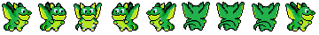
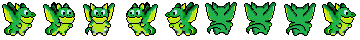
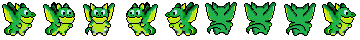

Poslikaj označena polja

 

Napiši zmajčku navodilo po katerem bo pobarval vsa označena polja.
Nepobarvana označena polja nastopajo v parih eno pod drugim. Zmajček mora na obe polji pobarvati preden lahko nadaljuje v naslednji stolpec.
Z blokom če,
S stavkom if,
lahko preveriš vsebino polja, na katerem čaka zmajček, in neoznačenega polja ne pobarvaš:

if poljeOznaceno():
pobarvaj()
Pod
blok če
navodilo s pogojem if,
lahko pripneš več navodil, kot na je ilustrirano sliki spodaj:

if poljeOznaceno():
pobarvaj()
desno()
Lahko uporabiš
blok če / sicer,
navodilo s pogojem if / else,
saj je tako mogoče izvršiti različna navodila za primera, ko je zmajček na označenem ali neoznačenem polju.

if poljeOznaceno():
pobarvaj()
else:
gor()
Zapomni si: skupno se mora zmajček premakniti desno 14 krat, da doseže zadnje označeno polje.